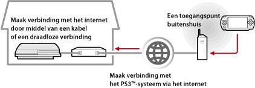
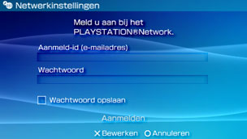

Netwerk > Remote-play gebruiken (via het internet)
Remote-play gebruiken (via het internet)
Om deze functie te gebruiken, zult u mogelijk de systeemsoftware van het PS3™-systeem en het PSP™-systeem moeten updaten.
Met uw PSP™-systeem en een draadloos toegangspunt (zoals via een commerciële, draadloze hotspotdienst (draadloos LAN)), kunt u via het internet verbinding maken met het PS3™-systeem dat zich thuis bevindt. Om Remote-play buitenshuis te gebruiken, moet het PS3™-systeem in de standby-stand voor de Remote-play-verbinding worden gezet.

Opmerking
De methode voor het gebruiken van een commerciële draadloze hotspotdienst (draadloos LAN) en de kosten die daaraan verbonden zijn, hangen af van de serviceprovider. Contacteer voor meer informatie de serviceprovider.
Voorbereiding (1) (PS3™- en PSP™-systemen)
Wanneer u remote-play voor het eerst gebruikt, moet u het PS3™-systeem registreren (koppelen) met het PS3™-systeem. Registreer het toestel onder  (Instellingen) >
(Instellingen) >  (Remote-Play-instellingen) > [Apparaat registreren].
(Remote-Play-instellingen) > [Apparaat registreren].
Voorbereiding (2) (PS3™-systeem)
Stel het PS3™-systeem in zodat het op stand-bystand overgaat. U moet [Remote-start] op [Aan] instellen zodat u het PS3™-systeem kunt inschakelen vanaf het PSP™-systeem.
1. |
Voer de volgende stappen uit op het PS3™-systeem:
|
|---|---|
2. |
Schakel het PS3™-systeem uit. |
 (Gebruikers).
(Gebruikers). (Schakel systeem uit) om het systeem uit te schakelen en in de stand-bymodus te brengen. Controleer of de activiteitsindicator rood oplicht.
(Schakel systeem uit) om het systeem uit te schakelen en in de stand-bymodus te brengen. Controleer of de activiteitsindicator rood oplicht.Opmerking
Zie (Instellingen) > (Remote-Play-instellingen) > [Remote-start] in deze handleiding voor meer informatie over de instellingen die worden beschreven in stap 1.
Voorbereiding (3) (PSP™-systeem)
Creëer een netwerkverbinding om het PSP™-systeem te verbinden met een toegangspunt. Om Remote-play te gebruiken via het internet, kunt u een toegangspunt gebruiken, zoals een commerciële draadloze hotspotdienst (draadloos LAN). Meer informatie vindt u in de gebruikershandleiding van het PSP™-systeem.
Remote-play gebruiken
1. |
Selecteer |
|---|---|
2. |
Selecteer [Verbind via internet]. |
3. |
Selecteer de verbinding voor het te gebruiken toegangspunt voor remote-play uit de lijst met verbindingen. |
4. |
Voer de PlayStation®Network gebruikersnaam en het wachtwoord in voor de gebruikte account op het PS3™-systeem.  Het PS3™-systeemscherm wordt weergegeven op het PSP™-systeem zodra de verbinding is gemaakt. |
 (Netwerk) >
(Netwerk) >  (Remote-play) op het PSP™-systeem.
(Remote-play) op het PSP™-systeem.Remote-play beëindigen
Druk op de PS-toets (HOME-toets) van het PSP™-systeem en selecteer [Eindigen Remote-play] > [Afsluiten en schakel het PS3™-systeem uit].
Opmerking
Selecteer [Afsluiten zonder het PS3™-systeem uit te schakelen] als u uw PS3™-systeem gebruikt om bestanden te kopiëren of om te downloaden in de achtergrond en andere taken uit te voeren waarvoor u uw systeem dient ingeschakeld te houden.
Remote-play gebruiken via het internet
Afhankelijk van het gebruikte netwerkapparaat is het mogelijk dat u geen gebruik kunt maken van remote-play via het internet. Controleer als dat gebeurt de volgende informatie:
- Gebruik [Internetverbinding testen] in
 (Netwerkinstellingen) onder (Instellingen) om na te gaan of het PSP™-systeem verbinding kan maken met het internet en het PlayStation®Network.
(Netwerkinstellingen) onder (Instellingen) om na te gaan of het PSP™-systeem verbinding kan maken met het internet en het PlayStation®Network. - Activeer de UPnP-functie van de gebruikte router indien de router UPnP ondersteunt.
- Indien de router geen UPnP ondersteunt, moet u de port forwarding van de router instellen zodat communicatie tussen het internet en het PS3™-systeem wordt toegestaan. Het poortnummer dat wordt gebruikt door remote-play is TCP:9293. Meer informatie over het instellen van deze functie vindt u in de handleiding van de router.
- Port forwarding (verkeersomleiding) is een functie om signalen die toekomen aan een specifieke poort (ingang) door te sturen naar een andere specifieke poort (uitgang). Dit wordt eveneens "port mapping" (poorten uitstippelen) of "address conversion" (adresconversie) genoemd.
- Als het PS3™-systeem is verbonden met het internet via twee of meer routers, werkt de communicatie mogelijk niet correct.
Opmerkingen
- Een router is een apparaat waarmee meerdere apparaten een enkele internetlijn kunnen delen.
- De communicatie kan beperkt worden afhankelijk van de veiligheidsfuncties van de router en de internetserviceprovider. Raadpleeg de handleiding van het gebruikte netwerkapparaat en de informatie van uw internetserviceprovider.